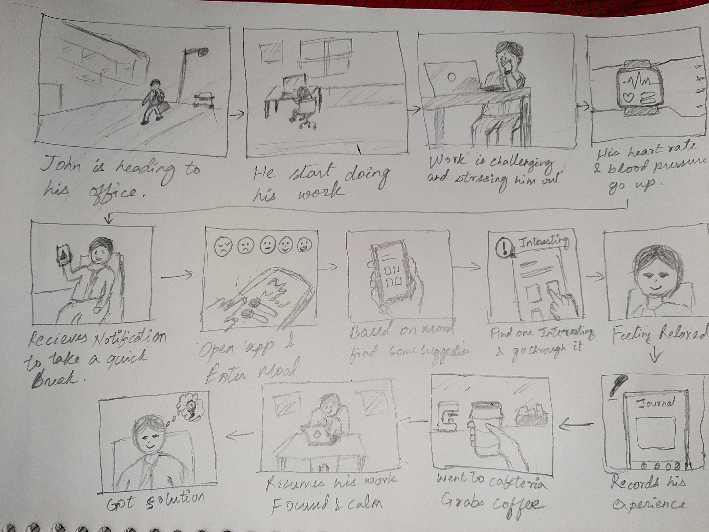
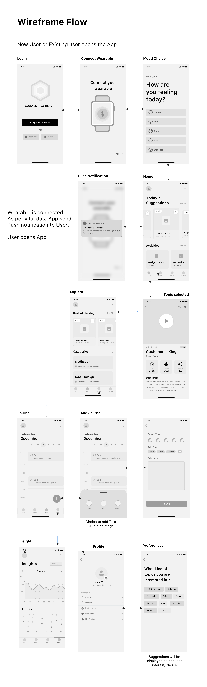
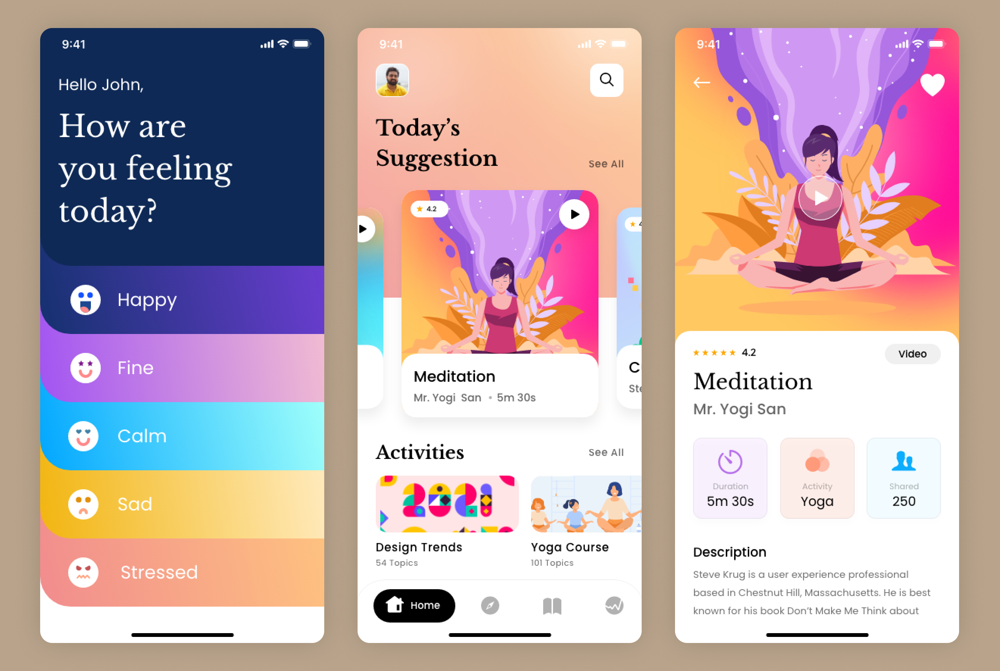
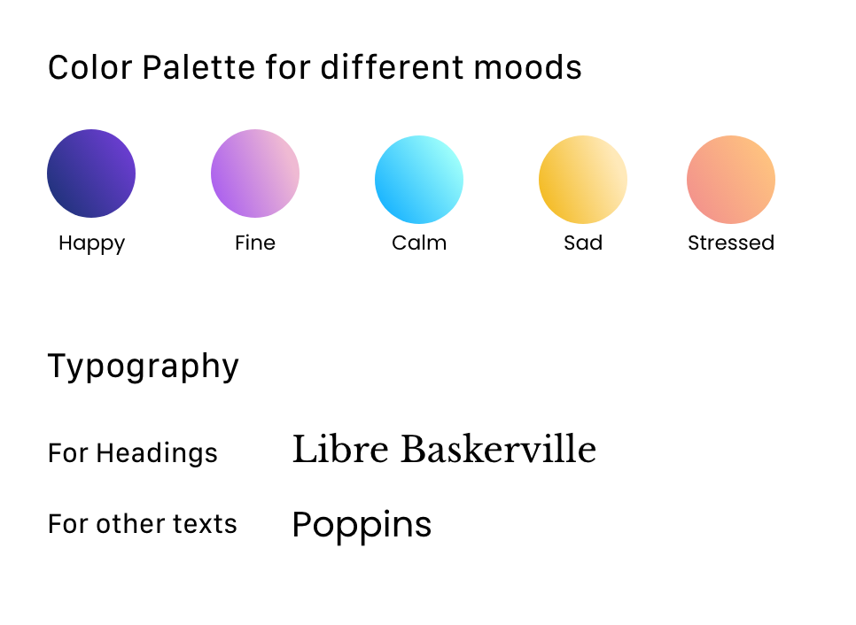

Contact
Let's work together
For new opportunities and collaborations. Feel free to reach out or just want to connect.
Promoting and improving mental well-being within the workplace environment
To design an intuitive and proactive mobile application aimed at promoting and improving mental well-being within the workplace environment.
My Role: I was part of the project as a Sr. UX designer and was responsible for UX/UI Design.
Collaboration: Business Stakeholder, Project Manager, and Dev team.
Tools: Figma, Jira, MS Teams

Recognizing the increasing awareness of mental health's importance, particularly highlighted during the COVID-19 pandemic, this project addresses the need for accessible and personalized tools to support employees' emotional well-being. The existing methods for self-monitoring and seeking support can often be time-consuming, reactive, and may not always provide relevant guidance in moments of need.
This project envisions a mobile application that empowers users to proactively manage their mental health by tracking their emotional states, identifying stressors, and accessing personalized resources. Leveraging wearable technology for seamless data input and AI-driven suggestions, the app aims to provide timely support and foster a positive and supportive work environment.
The design process followed a user-centered approach, focusing on understanding user needs, defining clear goals, and iteratively developing a solution that is both effective and engaging.
To ground the design process in real user needs, a user persona, "John," was created. This involved:
User stories were crafted to maintain a clear focus on John's motivations and pain points throughout the design process.
John's Story: "Whether I am learning from challenges or from mistakes at work, I am constantly growing. These experiences, both good and bad, contribute to my personal and professional development. I want a way to keep track of my thoughts and moods and share my experiences with others who might benefit. This will help me analyze and proactively manage my mental health. While tracking this, I want to understand my progress in a way that is not obtrusive and doesn't consume too much time."
A user journey map was created to visualize John's potential interaction with the app in a real-world scenario:

Wireframes were developed to visualize the app's structure and key interactions, focusing on aligning with John's goals of promoting good mental health at the workplace.

The visual design of the app utilizes bright and uplifting colors to promote a positive mindset. A minimalist approach ensures clarity and conciseness, making the interface easy to navigate and understand.


Promoting good mental health is essential for everyone's well-being, especially in the workplace. This app aims to provide timely guidance and a simple way to track thoughts and emotions, empowering users to proactively manage their mental health. By leveraging wearable technology for seamless data input and focusing on a user-centered design, the goal was to create an accessible, intuitive, and valuable tool that supports users in their journey towards improved mental well-being. The design prioritizes simplicity and ease of use, ensuring that the app can seamlessly integrate into the user's daily routine and provide support exactly when it's needed.
For new opportunities and collaborations. Feel free to reach out or just want to connect.